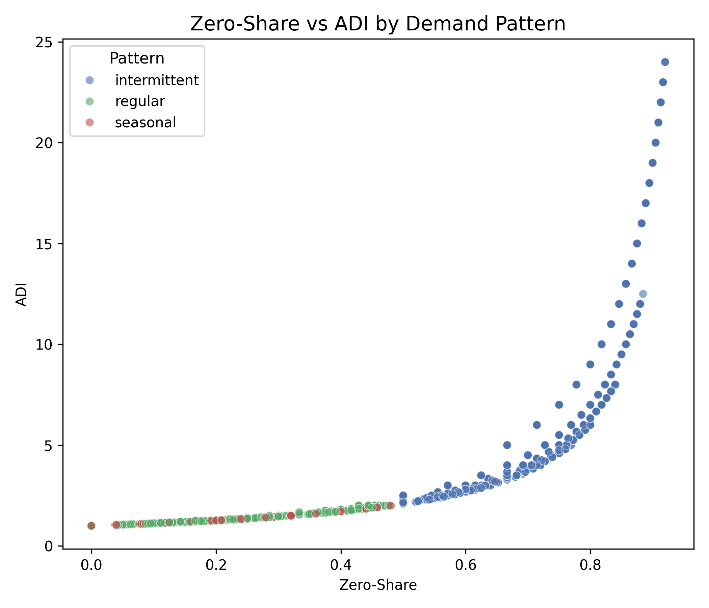
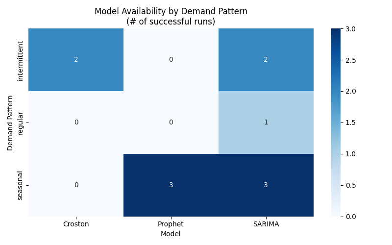
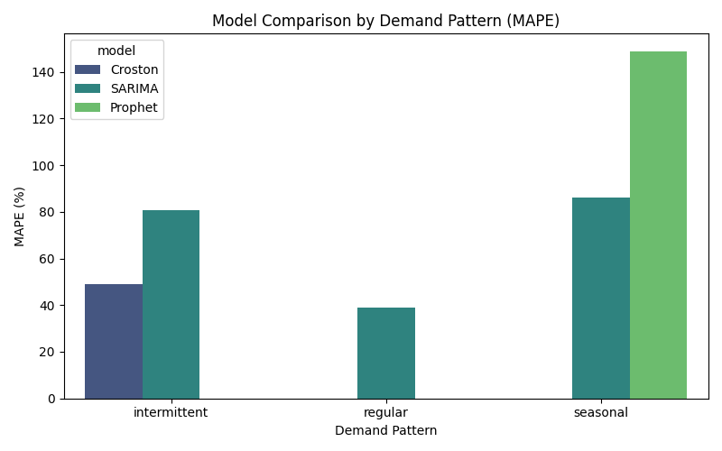

Methods
1. Overview
This study employs a pattern-specific forecasting framework designed to handle the substantial heterogeneity in store–item sales behavior. Preliminary exploratory analysis showed that series differ not only in sales volume but also in sparsity, variability, and seasonal structure. Because a single model family cannot effectively handle all three conditions simultaneously, the forecasting pipeline first classifies each series into a demand pattern from intermittent, regular, or seasonal, and then applies the forecasting model most appropriate for that pattern.
This approach aligns with best practices in sparse-demand and retail forecasting literature, where model selection is conditioned on demand behavior rather than applied uniformly across all series.
2. Demand Pattern Classification
Demand patterns were identified using diagnostic statistics widely used to distinguish between intermittent, stable, and seasonal series. For each store–item series, we computed:
- Zero-share: proportion of months with zero sales
- Average Inter-Demand Interval (ADI): mean gap between non-zero sales
- Autocorrelation at lag 12 (ACF12): degree of annual dependence
- Seasonal strength: STL-based decomposition metric
- Coefficient of Variation (CV): scaling of variability relative to mean sales
Classification rules were defined as:
- Intermittent
- Zero-share ≥ 0.5
- ADI ≥ 1.5
- Zero-share ≥ 0.5
- Seasonal
- Seasonal strength ≥ 0.5 or ACF(12) ≥ 0.5
- Seasonal strength ≥ 0.5 or ACF(12) ≥ 0.5
- Regular
- All remaining series with low zeros and weak seasonality
These diagnostics ensure that forecasting models are matched to the structural characteristics of each series, improving model stability and accuracy.

3. Model Selection Strategy
Because demand patterns differ in structure and sparsity, each pattern is paired with a different model family.
3.1 Intermittent Demand
Intermittent series exhibit long zero stretches and isolated spikes, making conventional autoregressive models unsuitable. For these series, we apply:
- Croston’s Method
- SARIMA as a weak benchmark, primarily to illustrate poor performance
These models explicitly separate the probability of demand occurrence from expected demand size, which has been shown to yield superior accuracy in zero-inflated environments.
3.2 Regular Demand
Regular series show stable, low-variance month-to-month sales without strong seasonal cycles. These characteristics align well with classical time-series models. Therefore:
- SARIMA is used as the primary estimator
Its autoregressive and moving-average terms effectively capture the smooth temporal structure that characterizes these series.
3.3 Seasonal Demand
Seasonal series exhibit recurring demand peaks. These are modeled using:
- Seasonal SARIMA, and
- Prophet, a decompositional model with flexible trend and seasonality
Prophet is included because it handles incomplete seasonal cycles more robustly than SARIMA, although its performance depends on the presence of multiple seasonal periods.

It shows which models were applicable to each demand pattern. Croston was valid only for intermittent demand, SARIMA was usable across all patterns, and Prophet ran successfully only for seasonal series. Machine learning and other time-series models were excluded because the data lacked sufficient length or structure. This confirms that a pattern-specific modeling strategy is required.
4. Forecasting Pipeline
All store–item time series follow a unified five-stage forecasting workflow:
1. Data Aggregation
Monthly units are computed for every store–item combination.
2. Feature Extraction
Diagnostic indicators (zero-share, ADI, ACF12, seasonal strength, CV) are computed.
3. Pattern Assignment
Each series is labeled intermittent, regular, or seasonal using the rules described above.
4. Model Application
Models are assigned based on pattern classification. Hyperparameters are kept consistent across series to avoid overfitting short horizons.
5. Accuracy Evaluation
Accuracy is computed using six complementary metrics to ensure robustness across sparse and non-sparse structures.

It compares the average MAPE for each model within each demand pattern. Croston performs best for intermittent demand, SARIMA consistently delivers the lowest error for regular demand, and SARIMA also outperforms Prophet for seasonal demand. These differences confirm that no single model performs well across all patterns, motivating the use of pattern-specific forecasting models.
5. Evaluation Metrics
Forecast accuracy is evaluated using six standard measures that capture both scale-dependent and relative error characteristics:
- MAE – Mean Absolute Error
- RMSE – Root Mean Square Error
- MAPE – Mean Absolute Percentage Error
- sMAPE – Symmetric MAPE (robust to low volumes)
- MASE – Mean Absolute Scaled Error (scale-free benchmark)
- Bias – Mean Forecast Error (systematic under- or over-prediction)
Using multiple metrics ensures that conclusions do not rely on a single error measure, which is essential for sparse-demand forecasting where percentage metrics can behave erratically.
6. Summary
The methodological framework combines pattern classification with model specialization, ensuring that each series receives a forecasting model aligned with its structural behavior. This design directly addresses the challenges posed by sparse, low-volume, and short seasonal time series, and provides a principled foundation for evaluating performance differences across business types.